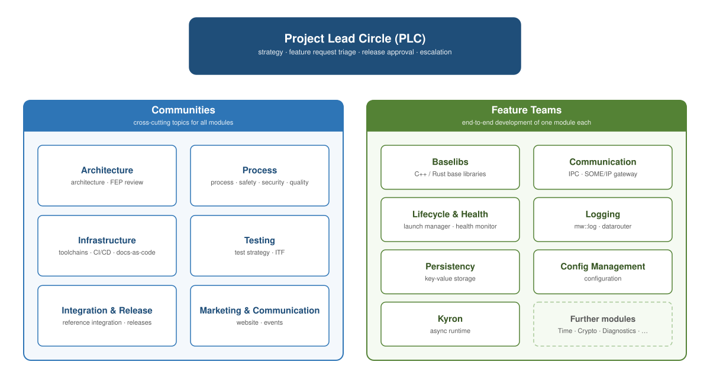
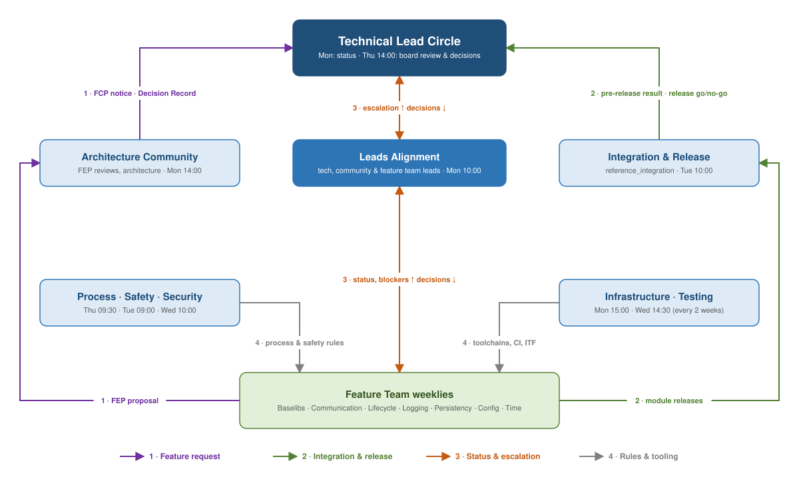

Project at a Glance#
The short track through S-CORE: how the project is organized, which meetings matter, the key processes and where to find the details.


Who does what#
Body |
Responsibility |
|---|---|
Project / Technical Lead Circle (PLC/TLC) |
Strategic and technical decisions, triage of feature requests, adding/removing repositories, release planning and approval, escalation |
Communities |
Topics that span all modules; each has a Community Lead |
Feature Teams |
One module each, from architecture to integration test; each has a Lead and at least one Committer |
Most important meetings#
All meetings are open to everyone; times in CET/CEST, from the S-CORE calendar (check there for changes). Minutes are posted in the GitHub Discussions of each team and community.
Meeting |
When |
What happens |
|---|---|---|
Technical Lead Circle (minutes) |
twice a week: Mon (status), Thu 14:00 (board review) |
Mon: status of milestones, bugs and open feature requests. Thu: review of product increments, epics and tasks; decisions on releases, versioning, scope and escalations. |
Leads Alignment (Tech Leads, Community Leads, Feature Team Leads) |
weekly, Mon 10:00 |
All leads sync: cross-team dependencies, blockers, information from the TLC to the teams and escalations from the teams to the TLC. |
Architecture Community (minutes) |
weekly, Mon 14:00 |
Architecture questions, contribution pitches and FEP reviews; cancelled when there are no agenda items. |
SW Development Process Community (minutes) |
weekly, Thu 09:30 |
Process development (news, updates, improvements), safety and quality management, process implementation in the tooling. |
Safety Topics / Safety Management |
weekly, Tue 09:00 |
Safety management and safety analyses across modules. |
Security Topics / Security Management |
weekly, Wed 10:00 |
Security management, threat analyses and security topics across modules. |
Infrastructure Weekly |
weekly, Mon 15:00 |
Toolchains (C++, Rust, Python), CI/CD, devcontainer, docs-as-code, repository standards. |
Testing Team |
every 2 weeks, Wed 14:30 |
Test strategy, ITF and test tooling. |
reference_integration (Integration & Release, minutes) |
weekly, Tue 10:00 |
Integration status, results of the weekly pre-release check, release preparation (release branches, release notes, known issues). |
Feature Team weeklies |
weekly, per team |
Progress, issue and PR triage, planning of the module: Baselibs (Wed 13:00), Communication/IPC (Mon 15:00), Lifecycle (Wed 10:00), Logging (Tue 11:00), Persistency (Thu 13:30), Config Management (Tue 13:30), Time (Fri 09:30). |
How the meetings work together#


Feature request: a Feature Team (or any contributor) brings a FEP to the Architecture Community; it is reviewed there, goes through the Final Comment Period and ends as a Decision Record, which the TLC sees for its roadmap.
Integration & release: Feature Teams release their modules; the reference_integration meeting checks them every week in the pre-release check and prepares the platform release, which the TLC approves.
Status & escalation: Feature Teams report status and blockers to the Leads Alignment; what cannot be solved there goes to the TLC, and decisions flow back the same way.
Rules & tooling: the Process, Safety and Security meetings define the rules, Infrastructure and Testing provide toolchains, CI and test frameworks that all Feature Teams use.
Communities in one line#
Architecture: platform architecture, new features (FEP review), coding guidelines
Process: development process incl. safety, security, quality (
process_description)Infrastructure: toolchains, devcontainer, docs-as-code, CI/CD, Bazel registry
Testing: test strategy, ITF, testing tools
Integration & Release:
reference_integration, platform releasesMarketing & Communication: website, events, public relations
Most important concepts#
Common#
Decisions go up, work goes sideways: the TLC decides; Communities set common rules; Feature Teams build the modules.
Teams are created or closed by the TLC. A new team gets a GitHub team, repositories, CODEOWNERS, a project board, a label (
community:/ft:) and a Slack channel.Everything is open: all meetings are in the S-CORE calendar and open to everyone; minutes are public in the GitHub Discussions.
Members and leads are defined by the CODEOWNERS of the owned repositories.
Feature Request (FEP)#
New features and changes with impact on the platform or other teams go through the Feature & Enhancement Proposal (FEP) track (FEP guideline); changes inside one team use the normal Issue/PR flow.
Phase |
What happens |
|---|---|
0 Idea |
Post the idea in the architecture Slack channel, find a Shepherd (Architecture Community committer) |
1 Draft |
FEP as PR (Decision Record template) + tracking Issue Feature Request, label |
2 Final Comment Period |
14 days, a bot notifies all module maintainers; silence = approval, only substantive objections block |
3 Decision |
Accepted (PR merged as Decision Record), Rejected or Withdrawn; breaking changes need an explicit quorum |
4 Implementation |
The tracking Issue stays open until the implementation is merged |
The TLC triages incoming requests and is informed when a FEP enters its Final Comment Period.
Decision Record (DR)#
Every relevant decision is a Decision Record (
dec_recneed) in Decision Records, created by PR.Grouped by category: strategy, architecture, infrastructure, process, integration, AI (e.g.
DR-003-Stratmodule maturity levels).Status:
proposed→accepted; a DR keeps the original decision and rationale, guidelines built on it may evolve separately.Accepted FEPs become DRs; a team may also write a DR for its own decisions to persist the rationale.
Integration & Release process#
Releases are milestones in the score repository, planned and approved by the TLC.
Modules release independently (strict SemVer) into the S-CORE Bazel registry. SemVer applies to the public API and features: a breaking API change or a removed/changed feature means a new MAJOR version.
Reference Integration pins every module in known_good.json (release or exact commit), builds them together and runs tests, showcases and images on all target platforms (see Integration process).
Weekly pre-release check: every week all modules are bumped to their latest release on a pre-release branch to see early whether they still work together.
Release: release candidate branch → release note with module versions and maturity per module (Release / Experimental / Preview, DR-003).
Platform versions (
1.0,1.1, …) follow a release train, not SemVer (proposal, to be confirmed). For now, breaking API changes are allowed between all platform versions. Small fixes may be carried as patches inreference_integrationuntil the module releases them.
Module Maturity#
Every module in a platform release carries exactly one maturity level (Module Maturity Classification (dec_rec__strat__module_maturity_levels)). This lets all modules be part of the release while telling users how far each one is.
Level |
Process artifacts |
Requirements |
Quality statement |
|---|---|---|---|
Preview |
none or incomplete |
undetermined |
not possible |
Experimental |
complete |
not all implemented / tested, gaps are transparent |
yes, with known gaps |
Release |
complete, only minor deviations |
all implemented and fully tested |
yes |
Artifacts first: without the process artifacts (verification report, traceability, inspection checklists) no quality statement is possible, so the module stays Preview.
Declared by the module: each module sets
:maturity: preview | experimental | releaseon itsmodneed in its own docs (docs-as-code); the release note shows it per module.Not yet defined: exact border between minor and major deviations, who approves a level, and downgrades when the process changes.
Most important links#
Organization & meetings
Project Management Plan (organization, teams, planning)
Contributing & decisions
Change Management / Change Management Plan (incl. FEP track)
Platform, integration & release